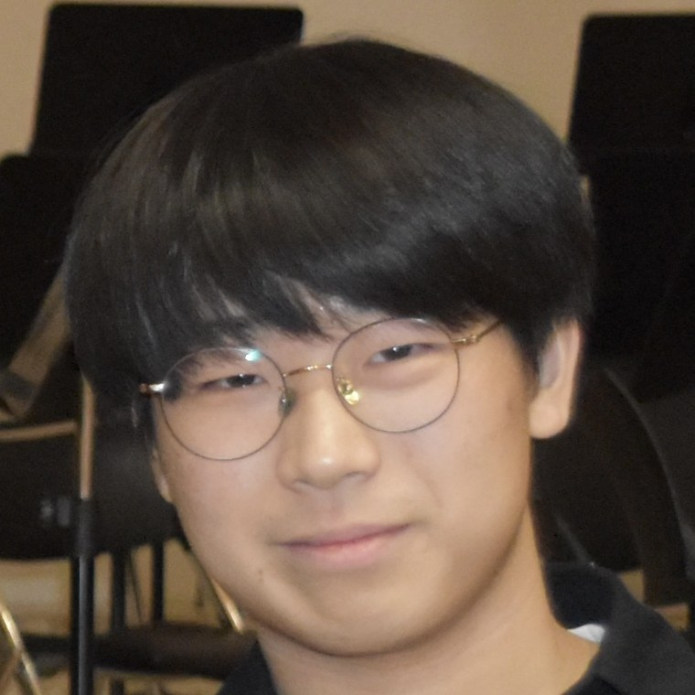

2025 – present
Undergraduate researcherComputer Vision Lab, POSTECH. Advisor: Minsu Cho
Undergraduate researcher, Computer Vision Lab, POSTECH
Pohang, South Korea

I'm a fourth-year math undergrad at POSTECH and an undergraduate researcher in the Computer Vision Lab, advised by Prof. Minsu Cho.
I want representations of 3D objects that respect the geometry of the object itself. What a model can express should be decided by the shape, not by whatever data it happened to see. Symmetry is a good test of that. If an object has a nontrivial symmetry group there is no single right answer, only an orbit of them, and you can tell in advance whether a representation is able to express it.
I came to vision from pure math, mostly topology and representation theory, and that's still how I read a problem.
Under review Submitted to NeurIPS 2026
The canonical orientation of a 3D object usually isn't unique. Many objects admit several equally valid frames, and under rotational symmetry those frames form an orbit of the symmetry group, which no single-output regressor can represent. We predict a continuous multi-modal distribution over SO(3) instead, through a truncated Wigner-D expansion that is equivariant by construction and assumes nothing about which symmetry group an object has. It outperforms recent equivariant regressors and fixed-quotient classifiers on the ShapeNet orientation benchmark, most clearly on categories with continuous rotational symmetry.
2025 – present
Undergraduate researcherComputer Vision Lab, POSTECH. Advisor: Minsu Cho
2023 – present
B.S. in MathematicsPOSTECH, Pohang, South Korea
2020 – 2022
Hansung Science High SchoolSeoul, South Korea
2025
Silver PrizeMathematics Competition for University Students in Korea, KMS
2024
Bronze PrizeMathematics Competition for University Students in Korea, KMS